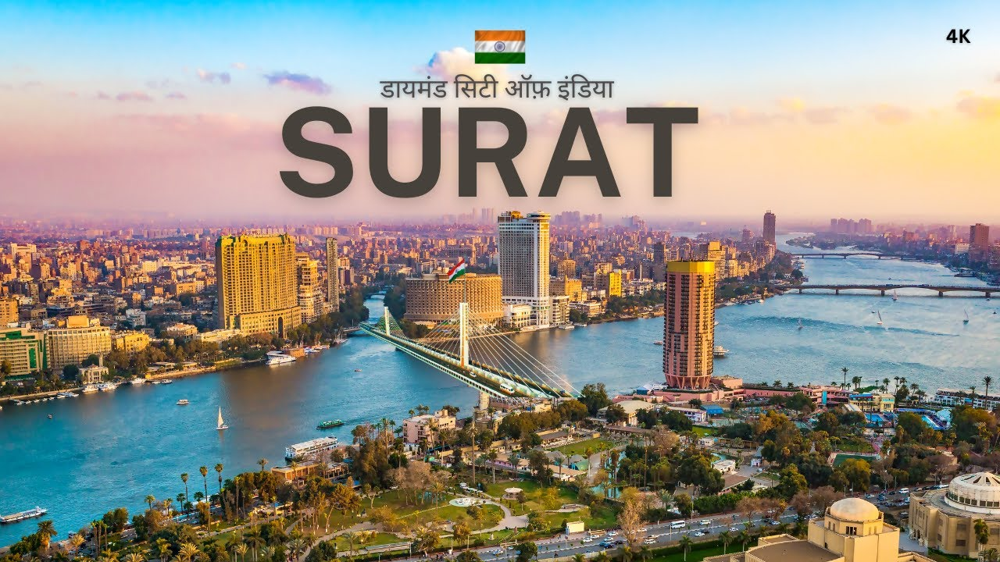

Welcome to Surat!

City Information
- State: Gujarat
- Country: India
- Famous For Polished Diamonds
Surat is a city in the western Indian state of Gujarat. The word Surat literally means face in Gujarati and Hindi. Located on the banks of the river Tapti near its confluence with the Arabian Sea, it used to be a large seaport. It is now the commercial and economic center in South Gujarat, and one of the largest urban areas of western India. It has well-established diamond and textile industry, and is a major supply centre for apparels and accessories. About 90% of the world's diamonds are cut and polished in Surat
Famous for
- Diamonds
- cotton mills and Surat Zari Craft
Latest Update:
Nandan Gadhiya